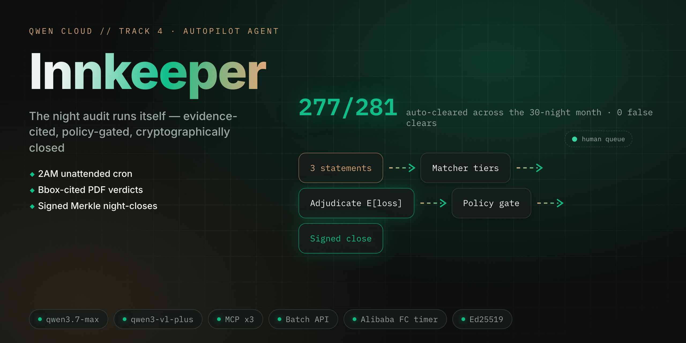
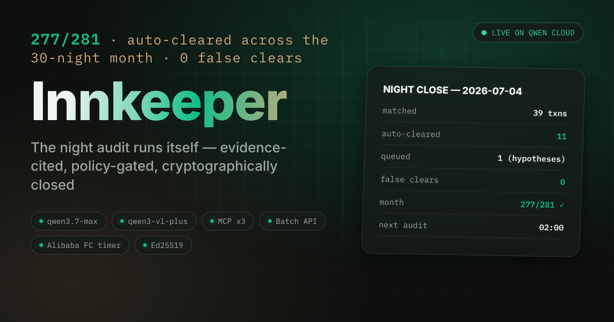

The night audit finally sleeps.
Track 4 · Autopilot Agent — three ledgers in, evidence-cited verdicts out, a signed Merkle close every night.
Edy Cu · innkeeper.edycu.dev · github.com/edycutjong/innkeeper
The hook
The last time the inn let a "small" three-way discrepancy slide, that's what it grew into.
The problem · 12:40 AM
A husband-and-wife inn runs 14 rooms. Every night one of them stays up past midnight reconciling the PMS folios, the processor settlements, and the OTA's PDF statement — three systems that never quite agree.
No controller, no audit team, no software budget. Just lost sleep — or lost money.
The solution
Fetch → extract → match → adjudicate → expected-loss gate → signed Merkle close.
Confident mismatches clear themselves; only the material unknown reaches the owner's morning coffee.

How it works
The demo · two beats that matter
Key features
The risk knob τ trades automation against review load — without ever touching the safety floor.
verify-chainWhy Qwen Cloud — specifically
A 14-room inn will never pay for a document-AI vendor, a frontier LLM, and an orchestration framework — or get a single-vendor trail it can sign into the books.
Traction — shipped, verifiable
--live is key-gatedinfra/fc/), not deployedThe ask
Watch the $310 unknown refuse to auto-clear, then re-derive the whole night byte-for-byte. Judge the receipts, not the promises.
innkeeper.edycu.dev · github.com/edycutjong/innkeeper · Edy Cu — solo builder

The night auditor finally sleeps.